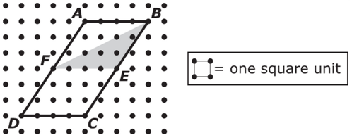
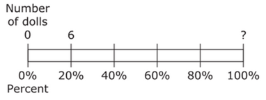
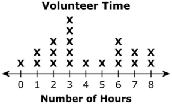

Longdesc Examples
Using a hidden link as well as longdesc
Question 1 model. Open question 1 equivalent in a new window

Question 2 model. Open question 2 equivalent in a new window

Question 3 model. Open question 3 equivalent in a new window
